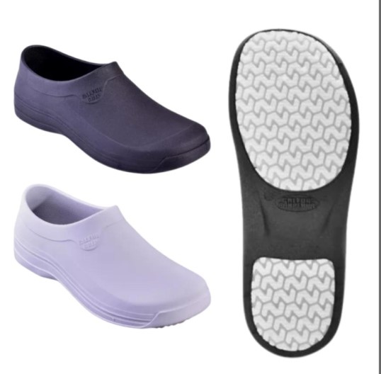
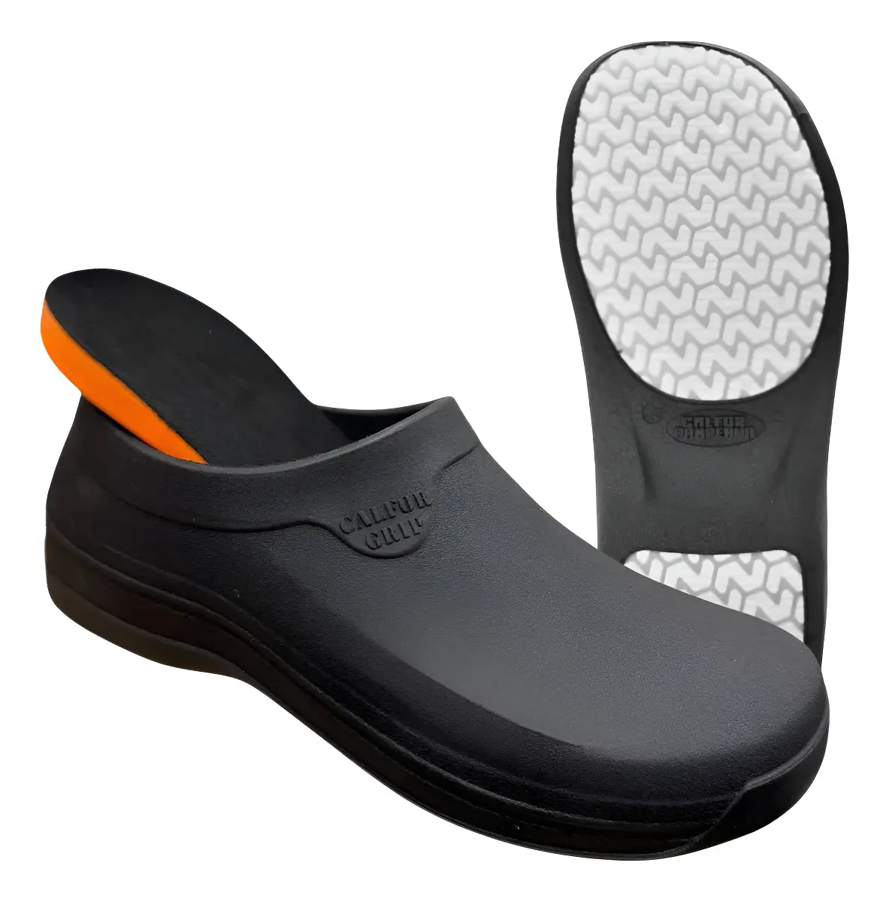

GASTRONÓMICAMENTE
Indumentaria de trabajo
CALZADO ANTIDESLIZANTE


Colores: Blanco / Negro.
Talles : desde el 35 al 45
Calzado con placa antideslizante: $40.000.-


Colores: Blanco / Negro.
Talles : desde el 35 al 45
Calzado con placa antideslizante: $40.000.-